12장 확인 완료 · 추가 클릭 없이 계산 완료
기존 G 저장 주석 96점을 그대로 사용했습니다. 아래는 고정 12장에 대한 결과입니다.
| 지표 | Base | N3 | 변화 |
|---|---|---|---|
| 코너 오차 중앙값(px) | 3.974 | 4.184 | +0.210 px |
| 코너 오차 P90(px) | 9.643 | 8.977 | -0.666 px |
| 오차 10px 이내(전체 96점) | 88/96 (91.667%) | 91/96 (94.792%) | +3.125 %p |
| 결측·대상 불일치 점 | 0 | 0 | 전체 분모 유지 |
큰 오차와 10px 이내 비율은 개선됐지만 중앙값은 조금 악화됐습니다. 이 결과를 그대로 원고에 기록합니다.
상세 Markdown · 96점 오차 CSV · 수치·출처 JSON
왼쪽: 기존 참조 · 가운데: Base · 오른쪽: N3. 아래 12장은 모두 표시합니다. 이미지는 클릭하면 확대됩니다.
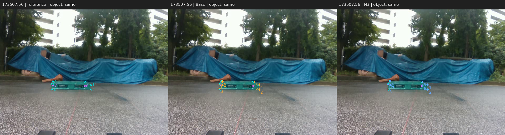
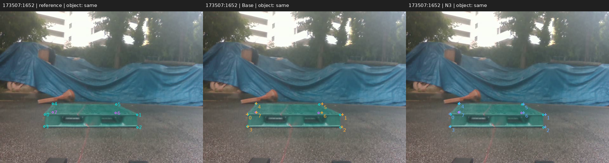
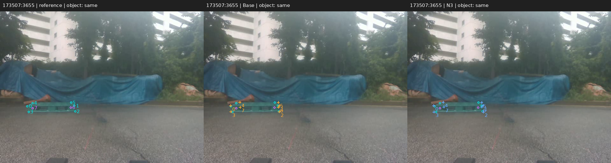
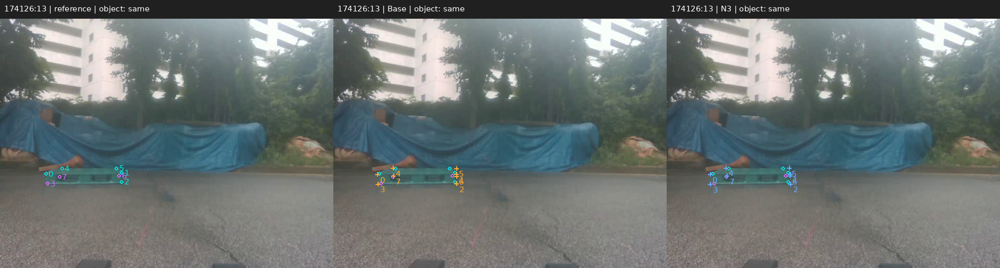
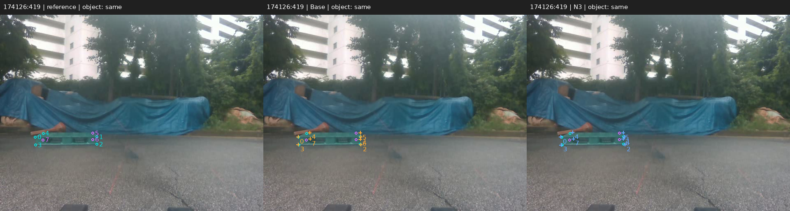
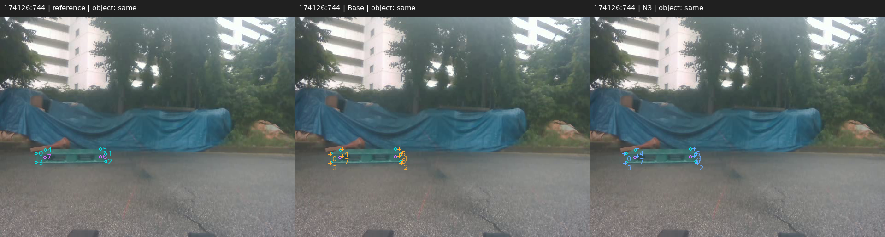
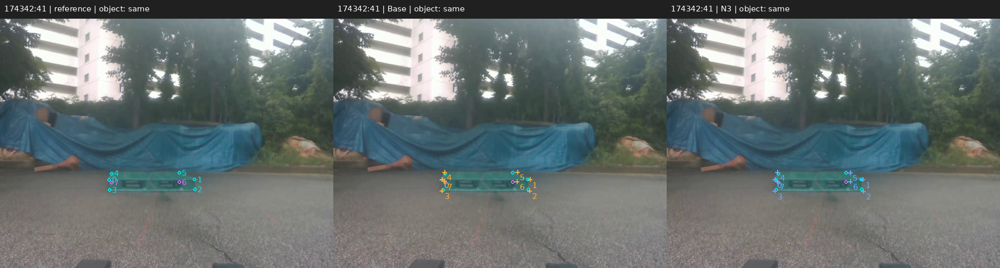
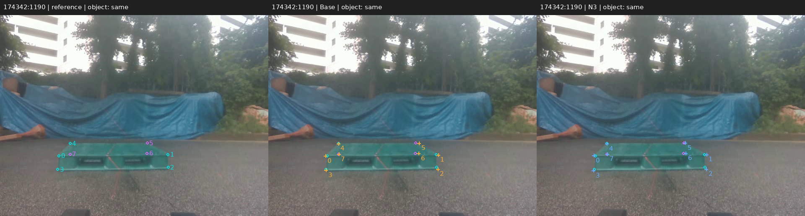
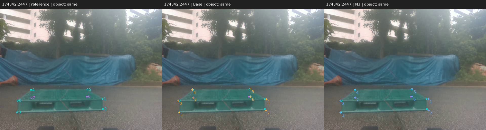
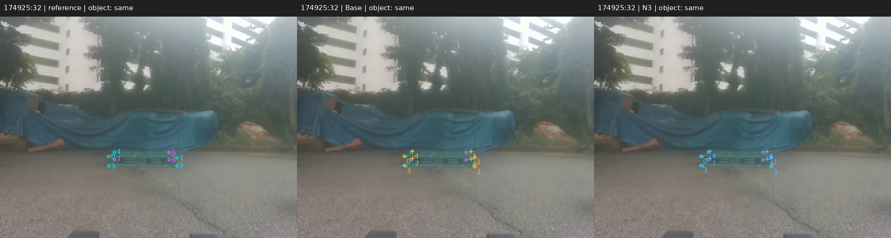
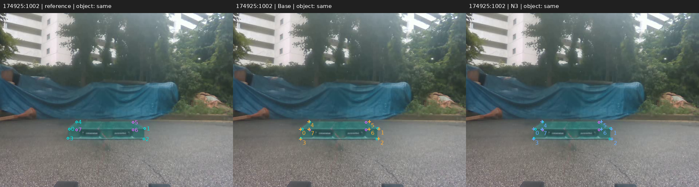
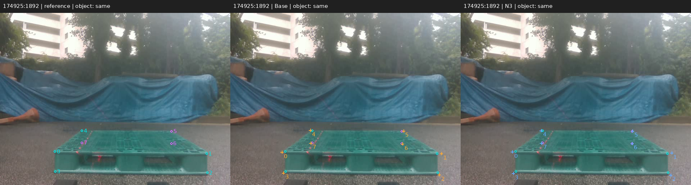